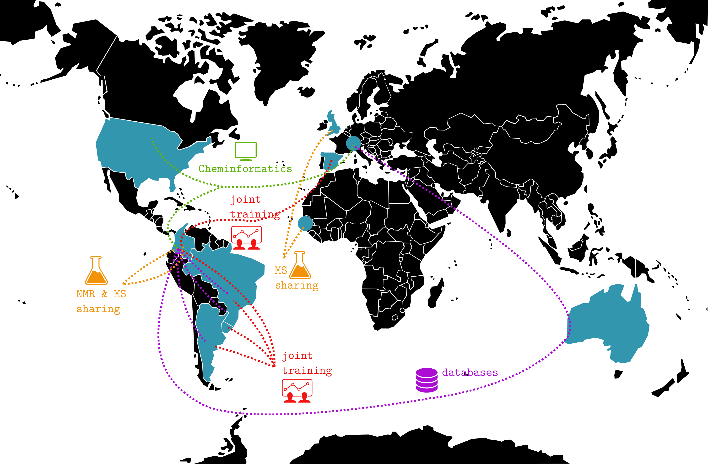

<section id="main" class="wrapper">
    <div class="container">
        <header class="major special">
            <h2>The goals</h2>
        </header>
        <div class="-2u 6u">
            <span class="image fit"></span>
        </div>
        <section>
            <div class="box alt">
                <div class="row 50% uniform">
                    <div class="-2u 6u">
                        <h3>Our Charter</h3>

                        <a href="./images/MoA Metabolomics Society_LAMPS_signed_20200218.pdf" download>
                            
                          </a>
                            <p>Performing Metabolomics in Latin America, and research in general, comes with some additional challenges for researchers and lab managers:
                            </p>
                            <h4>CHALLENGE 1) INSTRUMENT CHOICE (ROBUSTNESS OF INSTRUMENTATION TO LESS CONTROLLED CONDITIONS)</h4>
                            <p>Latin America isn't producing research equipment thus instrumentation has to be imported. Although Latin America is a growing research market, it is still very small when compared to the big nations of research, meaning that only a few companies/vendors have their own teams in Latin America, but not in all countries.
                            </p>

                            <h4>CHALLENGE 2) ACCOMMODATING VARIABILITY IN PHYSICAL AND FINANCIAL CLIMATES</h4>
                            <p>
                                Research is still underrated in almost all Latin American countries, as well as their budgets dedicated to science and innovation. This systematic underfunding impacts negatively on the sciences policies, mainly resulting in a lack of stable priorities and long-term investment strategies. This is a major obstacle to building a robust research infrastructure in our region.
                            </p>

                            <h4>CHALLENGE 3) RESTRICTED MATERIALS AND SUPPLIES</h4>
                            In the same vein, little has been done by weak or inexistent Ministries of Science to improve the importation process of research equipment. As a result, the purchase of research gears is more expensive and takes more time than it should. Typically, both importation and nationalization processes  increase the price by at least 30% up to 200%, and a simple replacement or maintenance kit may take 3 to 6 months to be purchased.
                            <p>
                            
                            </p>
                            <h4>CHALLENGE 4) OPEN SOURCE SOFTWARE AND DATA REPOSITORIES</h4>
                            <p>
                                The access to resources behind paywall is a major obstacle for underfunded researchers. This includes research papers, dataset or any database or software that is under a commercial license. Interestingly, Latin America is not a leading actor in open science and open data movements. On the contrary, the systematically underfunded Ministries of Science stays way behind their counterparts when it comes to negotiating national agreements or to draft new open policies that would ultimately benefit their researchers.
                            </p>

                            <h4>CHALLENGE 5) CORPORATE RECOGNITION OF THE BENEFITS OF SUPPORTING RESOURCE-LIMITED LABORATORIES AND INSTITUTIONS</h4>
                            <p>
                                The Latin American research market is not attractive enough for vendors and manufacturers to offer competitive support according to the different requirements, such as delayed payments schemes, corporate discounts and maintenance strategies that would effectively compensate for the lack of coherent national policies.
                            </p>

                            <h4>CHALLENGE 6) TRANSFER OF TECHNOLOGY AND EXPERTISE</h4>
                            <p>
                                The high upfront cost of setting up a metabolomic profiling infrastructure led to the concentration of equipment and skilled researchers in a handful of international hubs. These hubs are attractive for new talented researchers allowing for sustainable formation programs, i.e., a balanced inbound and outbound flow of researchers whose contributions outweigh the efforts required to train them. Conversely, Latin American "hubs"  send their researchers abroad for training and then are struggling to match operative conditions in the lab. While this leads to a constant transfer of skills, which is positive, it also increases the pressure to match the experimental conditions, and leaves no possibility to build a national critical mass. Altogether this adds to the costs of running a facility in Latin America. 
                            </p>
                            <h3>The goals</h3>
                            <p>
                                The LAMPS seeks to find sustainable solutions to grow a robust and stable capacity for metabolomics in Latin America, that includes joint-training camp, continent-wide collaborative projects, sharing experiences and practices relevant to Latin America, unified participation in international networking activities, among other things.
                            </p>

                    </div>
                </div>
            </div>
        </section>
    </div>
</section>